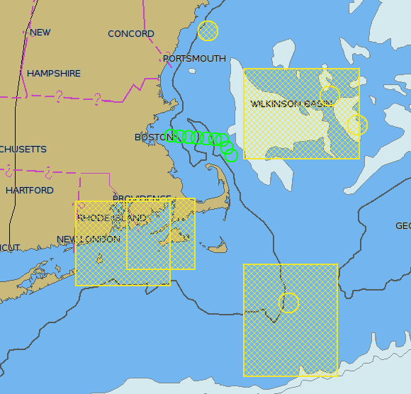

AIS Gebiets-Nachrichten
Zur Anzeige der Nachrichten muß in den Einstellungen/AIS "Zeige Gebietsmeldungen (von AIS Binär-Nachrichten)" aktiviert sein.
Viele Länder testen AIS Binär Nachrichten, es ist hier sehr viel Entwicklung zu erwarten. Bei OpenCPN ist das noch eine Baustelle, hinzugefügt Ende April 2012. Weitere Details im Cruisersforum
Zur Zeit werden Gebiete angezeigt, aber keine Nachrichten. Cape Cod, USA, sendet experimentelle Nachrichten. Zum Testen kopieren Sie vislab-ccom.unh.edu/ais/notices.aivdm in eine Textdatei und verweisen Sie das Plugin VDR (Voyage Data Recording) auf diese Datei. Die Nachrichten werden sehr oft erneuert.
